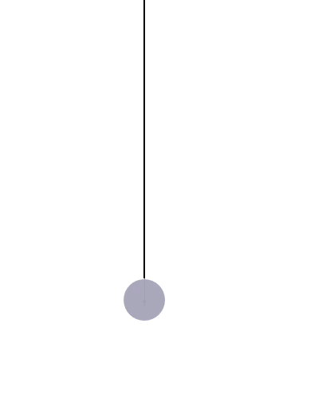
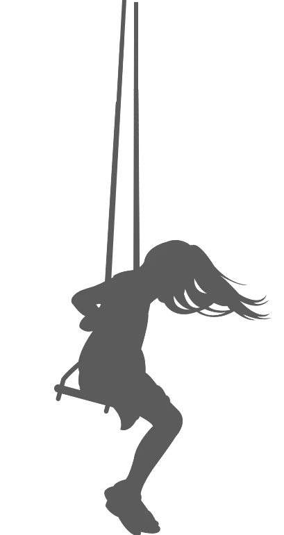

Idealizing the real world systems
Here we strip away details we consider unnecessary to solving the problem at hand.
- We consider the oscillating systems as a mass point connected to a massless string.
- Details like colour, material particulars, temparture etc are ignored.
- We further assume that the medium is of uniform density.
Let us now place the system in a mathematical grid !

